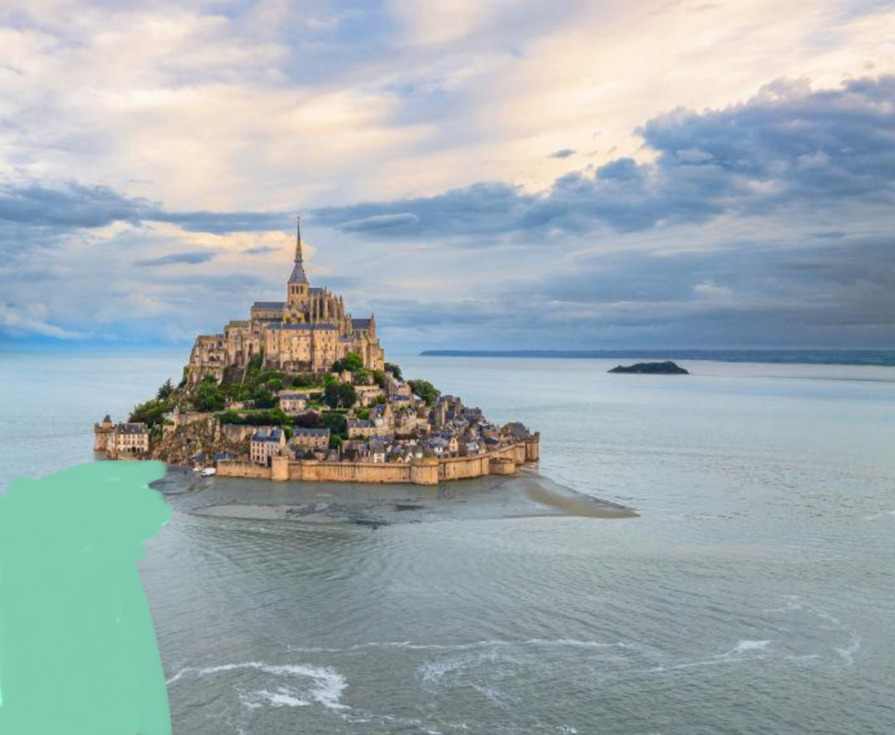

몽생미셸(Mont-Saint-Michel)은 프랑스 노르망디 해안에 자리한 수도원 섬입니다.
하루 두 번, 밀물과 썰물이 반복되면서 섬은 육지와 연결되었다가 다시 고립됩니다. 이러한 독특한 자연환경 때문에 중세 순례자들은 이곳을 단순한 수도원이 아니라 '경계를 건너는 장소'로 여겼습니다.
수도원까지 이어지는 길은 언제나 같은 모습이 아닙니다. 바다는 길을 열어 주기도 하고, 다시 지워 버리기도 합니다.
몽생미셸의 아름다움은 건축물이 아닙니다. 수백 년 동안 사람들을 이곳으로 이끈 것은 '사라지는 길'이었습니다.
밀물이 들어오면 조금 전까지 걸었던 길은 흔적도 없이 물속으로 잠깁니다. 그래서 중세의 순례자들은 이곳을 단순한 수도원이 아니라, 익숙한 삶에서 새로운 삶으로 건너가는 경계로 이해했습니다.
우리의 삶에도 이런 순간이 있습니다. 오랫동안 믿어 왔던 방식이 더 이상 통하지 않을 때, 붙잡고 있던 확신이 조용히 무너질 때, 우리는 길을 잃었다고 생각합니다.
하지만 때로는 그 길이 사라졌기 때문에, 비로소 다른 길을 발견하게 됩니다.
여행을 마친 뒤에야, 이 장소가 제게 왜 오래 남았는지 이해하게 되었습니다. 몽생미셸은 '도착한 장소'가 아니라, 경계를 건너는 사람의 마음을 보여 주는 풍경이었습니다.
삶에는 앞으로 나아가는 때보다 익숙했던 길이 사라지는 때가 더 중요한 순간이 있습니다. 그때 우리는 길을 잃었다고 생각하지만, 어쩌면 그 순간이야말로 새로운 여정이 시작되는 시간인지도 모릅니다.
말이 달리는 속도의 밀물
프랑스 현지에서는 몽생미셸의 밀물을 "말이 갤롭(Gallop)으로 달리는 속도(시속 약 20~30km)로 물이 차오른다"고 표현합니다. 평평한 갯벌을 걷다가 뒤를 돌아보면 이미 바닷물이 발목을 지나 무릎까지 순식간에 차오르기 때문에 자력으로 도망치는 것이 불가능합니다.
공포의 유동성 진흙 (Quick Sand)
몽생미셸 주변 갯벌은 발을 디디면 늪처럼 푹푹 빠지는 유동성 진흙 구역이 많습니다. 밀물이 밀려오는데 발이 진흙에 묶여 움직이지 못해 고립되어 익사하는 순례자들이 중세 시대부터 수없이 많았습니다.
8세기 이전, 이 섬에 수도원이 세워지기 전의 원래 이름은 프랑스어로 '몽 통브(Mont Tombe)'였습니다. 통브(Tombe)는 현대 프랑스어로 '무덤'을 뜻합니다. 이 때문에 '죽음의 섬' 혹은 '무덤의 산'이라는 무시무시한 의미로 해석되곤 했습니다.
하지만 역사학자와 어원학자들에 따르면, 이 '통브'는 무덤이라는 뜻보다는 갯벌 한가운데 둑처럼 '솟아오른 지형(거대한 돌덩이)'을 뜻하는 켈트어 어원에서 유래했을 가능성이 훨씬 높습니다. 모양이 마치 무덤처럼 생겨서 붙은 이름이기도 합니다.
708년, 아브랑슈의 주교 성 오베르의 꿈에 대천사 미카엘이 나타났습니다. 바다 한가운데 솟은 바위섬 위에 성소를 지으라는 계시였습니다.
오베르 주교는 이를 단순한 꿈으로 여겼습니다. 그러나 미카엘은 두 번, 세 번 다시 찾아왔습니다. 세 번째 꿈에서 천사는 주교의 이마에 손가락을 대어 구멍을 뚫었다는 전설이 전해집니다.
그렇게 지어진 것이 오늘날의 몽생미셸입니다.
히브리 문자 멤(מ)은 물을 의미합니다. 열린 멤(מ)은 흐르는 물, 닫힌 멤(ם)은 갇힌 물입니다.
몽생미셸의 바닷물이 길을 지우고 다시 드러내듯, 멤의 경로는 우리 안에서 무엇이 흐르고, 무엇이 막혀 있는지를 묻습니다.